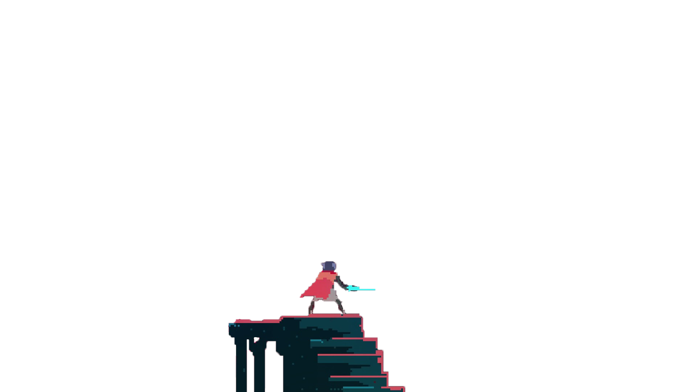
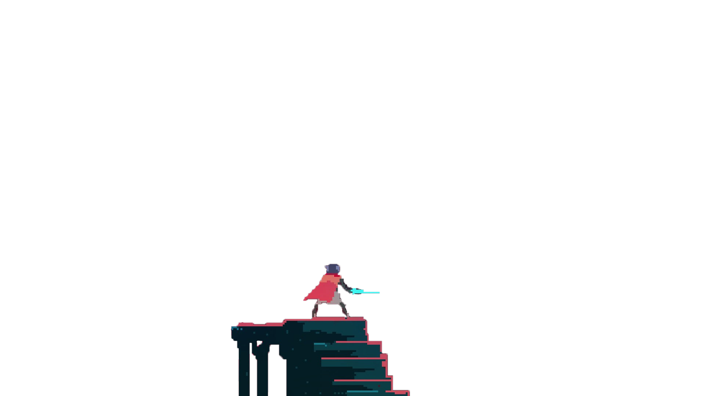

The MidNight Woods
The Crystal Forest or Midnight Woods is a biome on the West area of the land of light.
It is filled with various green regenerative Hard Light Crystals. The crystals seem infectious, as the inhabitors of the forest can become encased in them.Various Crystal Beasts seem to be the outcome of being infected by these crystals.
The Divine Path
The Mountains, also called Divine Path, the North and the Crystal Cliffs, are the northern area of the land of light.
The Mountains are a collection of snowy mountaintops, abandoned structures, and underground cave systems. The area is inhabited by the Bird People, a tribe of Vultures. The Vultures, Vulture Acolytes, and Vulture Shamans are enemies exclusive to this area.
The Eastern Watershelf
The Eastern Watershelf or lake is a biome on the East area of the land of light.
The Lake requires hopping between various decayed platforms, and the player is primarily dependent on moving platforms with large safe areas in between. Along with the moving platforms, the player goes underground to skip between areas.
The Barren Hills
The Barren Hills or simply Wastes is the South region of the land of light.
The Barren Hills is home to a large underground laboratory complex that also serves as a robot factory and is responsible for the creation of various creatures seen around the world such as the Dirks and blue-skins. Scattered about the desert are a number of ruined mechanical structures resembling pieces of a large spacecraft possibly also created in the labs.

 
